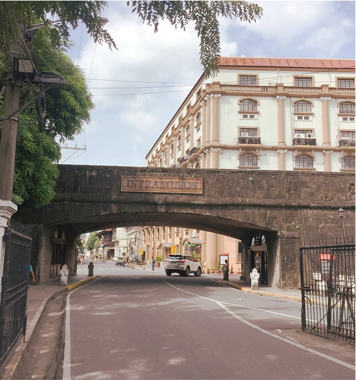
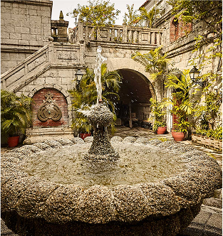
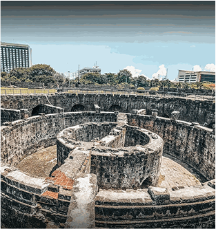
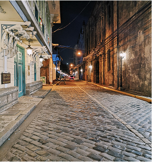

Discover the Rich History of Intramuros
Papa Kape
Destileria Limtuaco
Casa Manila
×

Title
Description goes here.
Description goes here.
Visiting Intramuros offers a deep dive into Manila's vibrant history and culture. Marvel at stunning architecture that tells the stories of a bygone era while enjoying unique experiences at every corner.




Immerse yourself in the rich history of Intramuros with our diverse tools. Whether you prefer guided routes or exploring at your own pace, we have something for everyone.
Find your way with ease through detailed maps highlighting key landmarks, historical sites, and hidden spots.
Read authentic feedback from fellow explorers and share your own experiences to guide others safely.
Plan the perfect day with our curated itineraries based on your interests, budget, and time frame.
Share your favourite Intramuros spot or leave a review to help fellow explorers.
Submit a Review